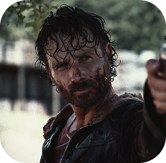
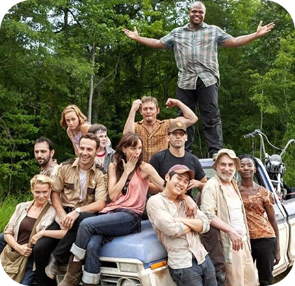

História

A história principal gira em torno do Protagonista Rick Grimes, no qual, no início do apocalipse estava internado em um hospital no interior da Geórgia, próximo a Atlanta. Rick acorda sozinho no hospital com o caos em sua volta, demorando para assimilar e perceber que estava no meio de um apocalipse.
O primeiro instinto de Rick, ao escapar do hospital é procurar sua família: Lori, sua esposa, e seu filho Carl. Rick é noticiado de que há um campo de sobreviventes em Atlanta, e parte direto pra lá, com esperança de que sua família estivesse lá.
Você sabia que The Walking Dead quase teve um destino completamente diferente? Frank Darabont, responsável pela criação da série para a televisão, foi demitido durante a produção da segunda temporada, mesmo depois do enorme sucesso da primeira. Além disso, na história em quadrinhos, Rick Grimes tem um destino muito diferente daquele apresentado na televisão. A série também surpreendeu os fãs ao transformar Daryl Dixon em um dos personagens mais importantes, mesmo ele nunca tendo existido nos quadrinhos originais!

Rick encontra sua família a caminho de Atlanta sob proteção de seu amigo Shane, que era seu parceiro policial do mesmo, junto com outros sobreviventes. Logo após o reencontro, o grupo sai em busca de um lugar seguro. A partir disso, a história toma partida e Rick e seu grupo acham pessoas boas e más no seu caminho, em busca da sobrevivência dele e de seus entes queridos.